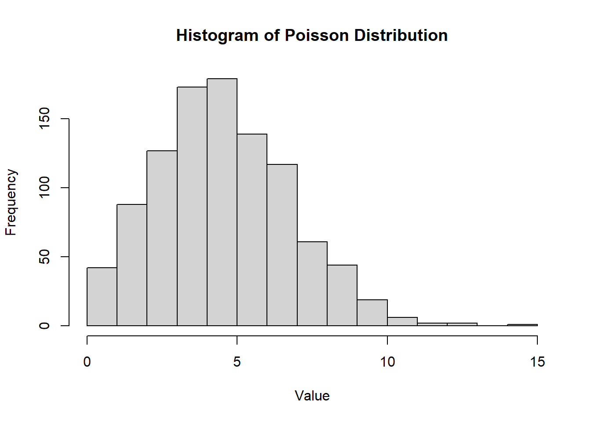
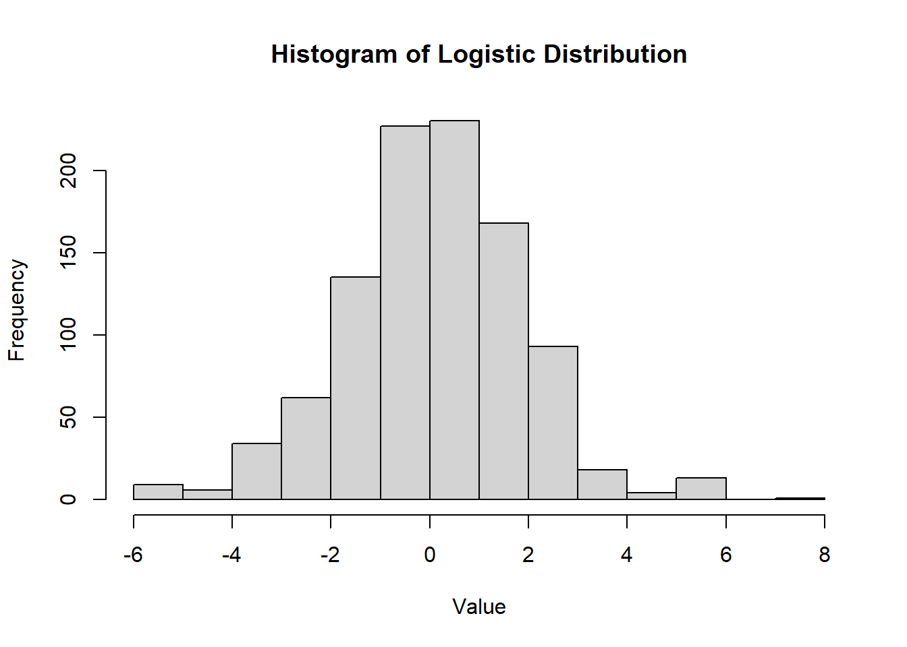
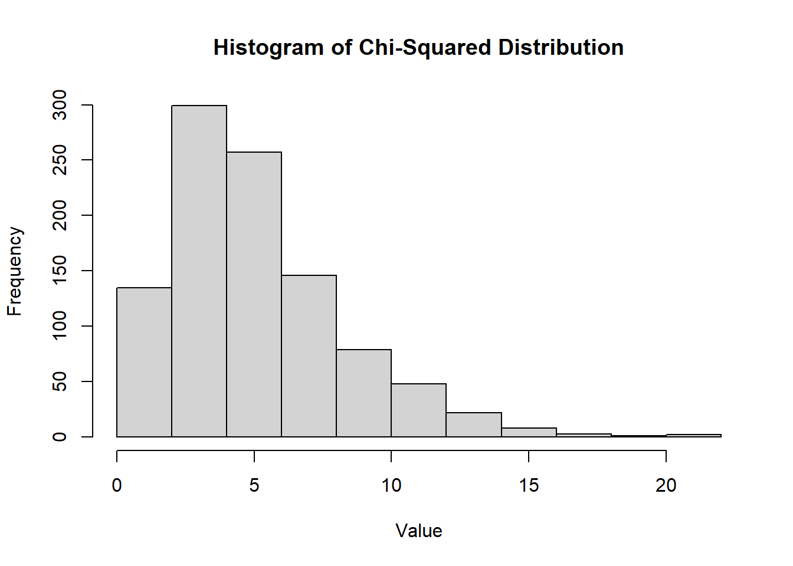
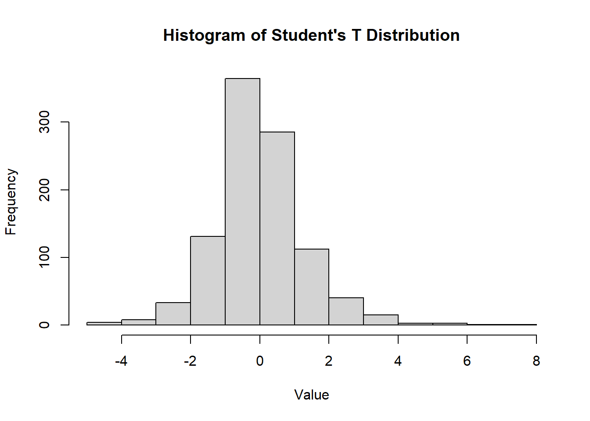
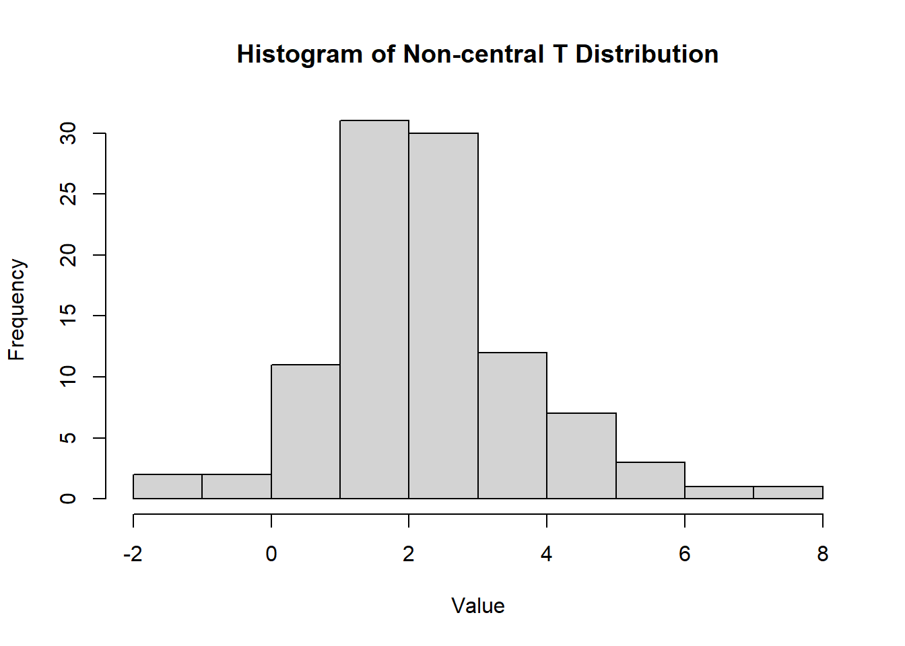

2.2 Probability Theory
2.2.1 Axioms and Theorems of Probability
Let \(S\) denote the sample space of an experiment. Then: \[ P[S] = 1 \] (The probability of the sample space is always 1.)
For any event \(A\): \[ P[A] \geq 0 \] (Probabilities are always non-negative.)
Let \(A_1, A_2, A_3, \dots\) be a finite or infinite collection of mutually exclusive events. Then: \[ P[A_1 \cup A_2 \cup A_3 \dots] = P[A_1] + P[A_2] + P[A_3] + \dots \] (The probability of the union of mutually exclusive events is the sum of their probabilities.)
The probability of the empty set is: \[ P[\emptyset] = 0 \]
The complement rule: \[ P[A'] = 1 - P[A] \]
The probability of the union of two events: \[ P[A_1 \cup A_2] = P[A_1] + P[A_2] - P[A_1 \cap A_2] \]
2.2.1.1 Conditional Probability
The conditional probability of \(A\) given \(B\) is defined as:
\[ P[A|B] = \frac{P[A \cap B]}{P[B]}, \quad \text{provided } P[B] \neq 0. \]
2.2.1.2 Independent Events
Two events \(A\) and \(B\) are independent if and only if:
- \(P[A \cap B] = P[A]P[B]\)
- \(P[A|B] = P[A]\)
- \(P[B|A] = P[B]\)
A collection of events \(A_1, A_2, \dots, A_n\) is independent if and only if every subcollection is independent.
2.2.1.3 Multiplication Rule
The probability of the intersection of two events can be calculated as: \[ P[A \cap B] = P[A|B]P[B] = P[B|A]P[A]. \]
2.2.1.4 Bayes’ Theorem
Let \(A_1, A_2, \dots, A_n\) be a collection of mutually exclusive events whose union is \(S\), and let \(B\) be an event with \(P[B] \neq 0\). Then, for any event \(A_j\) (\(j = 1, 2, \dots, n\)): \[ P[A_j|B] = \frac{P[B|A_j]P[A_j]}{\sum_{i=1}^n P[B|A_i]P[A_i]}. \]
2.2.1.5 Jensen’s Inequality
If \(g(x)\) is convex, then: \[ E[g(X)] \geq g(E[X]) \]
If \(g(x)\) is concave, then: \[ E[g(X)] \leq g(E[X]). \]
2.2.1.6 Law of Iterated Expectations
The law of iterated expectations states: \[ E[Y] = E[E[Y|X]]. \]
2.2.1.7 Correlation and Independence
The strength of the relationship between random variables can be ranked from strongest to weakest as:
- Independence:
- \(f(x, y) = f_X(x)f_Y(y)\)
- \(f_{Y|X}(y|x) = f_Y(y)\) and \(f_{X|Y}(x|y) = f_X(x)\)
- \(E[g_1(X)g_2(Y)] = E[g_1(X)]E[g_2(Y)]\)
- Mean Independence (implied by independence):
- \(Y\) is mean independent of \(X\) if: \[ E[Y|X] = E[Y]. \]
- \(E[Xg(Y)] = E[X]E[g(Y)]\)
- Uncorrelatedness (implied by independence and mean independence):
- \(\text{Cov}(X, Y) = 0\)
- \(\text{Var}(X + Y) = \text{Var}(X) + \text{Var}(Y)\)
- \(E[XY] = E[X]E[Y]\)
2.2.2 Central Limit Theorem
The Central Limit Theorem states that for a sufficiently large sample size (\(n \geq 25\)), the sampling distribution of the sample mean or proportion approaches a normal distribution, regardless of the population’s original distribution.
Let \(X_1, X_2, \dots, X_n\) be a random sample of size \(n\) from a distribution \(X\) with mean \(\mu\) and variance \(\sigma^2\). Then, for large \(n\):
The sample mean \(\bar{X}\) is approximately normal: \[ \mu_{\bar{X}} = \mu, \quad \sigma^2_{\bar{X}} = \frac{\sigma^2}{n}. \]
The sample proportion \(\hat{p}\) is approximately normal: \[ \mu_{\hat{p}} = p, \quad \sigma^2_{\hat{p}} = \frac{p(1-p)}{n}. \]
The difference in sample proportions \(\hat{p}_1 - \hat{p}_2\) is approximately normal: \[ \mu_{\hat{p}_1 - \hat{p}_2} = p_1 - p_2, \quad \sigma^2_{\hat{p}_1 - \hat{p}_2} = \frac{p_1(1-p_1)}{n_1} + \frac{p_2(1-p_2)}{n_2}. \]
The difference in sample means \(\bar{X}_1 - \bar{X}_2\) is approximately normal: \[ \mu_{\bar{X}_1 - \bar{X}_2} = \mu_1 - \mu_2, \quad \sigma^2_{\bar{X}_1 - \bar{X}_2} = \frac{\sigma_1^2}{n_1} + \frac{\sigma_2^2}{n_2}. \]
The following random variables are approximately standard normal:
- \(\frac{\bar{X} - \mu}{\sigma / \sqrt{n}}\)
- \(\frac{\hat{p} - p}{\sqrt{\frac{p(1-p)}{n}}}\)
- \(\frac{(\hat{p}_1 - \hat{p}_2) - (p_1 - p_2)}{\sqrt{\frac{p_1(1-p_1)}{n_1} + \frac{p_2(1-p_2)}{n_2}}}\)
- \(\frac{(\bar{X}_1 - \bar{X}_2) - (\mu_1 - \mu_2)}{\sqrt{\frac{\sigma_1^2}{n_1} + \frac{\sigma_2^2}{n_2}}}\)
2.2.2.1 Limiting Distribution of the Sample Mean
If \(\{X_i\}_{i=1}^{n}\) is an iid random sample from a distribution with finite mean \(\mu\) and finite variance \(\sigma^2\), the sample mean \(\bar{X}\) scaled by \(\sqrt{n}\) has the following limiting distribution:
\[ \sqrt{n}(\bar{X} - \mu) \xrightarrow{d} N(0, \sigma^2). \]
Standardizing the sample mean gives: \[ \frac{\sqrt{n}(\bar{X} - \mu)}{\sigma} \xrightarrow{d} N(0, 1). \]
Notes:
- The CLT holds for most random samples from any distribution (continuous, discrete, or unknown).
- It extends to the multivariate case: A random sample of a random vector converges to a multivariate normal distribution.
2.2.2.2 Asymptotic Variance and Limiting Variance
Asymptotic Variance (Avar): \[ Avar(\sqrt{n}(\bar{X} - \mu)) = \sigma^2. \]
Refers to the variance of the limiting distribution of an estimator as the sample size (\(n\)) approaches infinity.
It characterizes the variability of the scaled estimator \(\sqrt{n}(\bar{x} - \mu)\) in its asymptotic distribution (e.g., normal distribution).
Limiting Variance (\(\lim_{n \to \infty} Var\))
\[ \lim_{n \to \infty} Var(\sqrt{n}(\bar{x}-\mu)) = \sigma^2 \]
- Represents the value that the actual variance of \(\sqrt{n}(\bar{x} - \mu)\) converges to as \(n \to \infty\).
For a well-behaved estimator,
\[ Avar(\sqrt{n}(\bar{X} - \mu)) = \lim_{n \to \infty} Var(\sqrt{n}(\bar{x}-\mu)) = \sigma^2. \]
However, asymptotic variance is not necessarily equal to the limiting value of the variance because asymptotic variance is derived from the limiting distribution, while limiting variance is a convergence result of the sequence of variances.
\[ Avar(.) \neq lim_{n \to \infty} Var(.) \]
Both the asymptotic variance \(Avar\) and the limiting variance \(\lim_{n \to \infty} Var\) are numerically equal to \(\sigma^2\), but their conceptual definitions differ.
\(Avar(\cdot) \neq \lim_{n \to \infty} Var(\cdot)\). This emphasizes that while the numerical result may match, their derivation and meaning differ:
\(Avar\) depends on the asymptotic (large-sample) distribution of the estimator.
\(\lim_{n \to \infty} Var(\cdot)\) involves the sequence of variances as \(n\) grows.
Cases where the two do not match:
- Sample Quantiles: Consider the sample quantile of order \(p\), for some \(0 < p < 1\). Under regularity conditions, the asymptotic distribution of the sample quantile is normal, with a variance that depends on \(p\) and the density of the distribution at the \(p\)-th quantile. However, the variance of the sample quantile itself does not necessarily converge to this limit as the sample size grows.
- Bootstrap Methods: When using bootstrapping techniques to estimate the distribution of a statistic, the bootstrap distribution might converge to a different limiting distribution than the original statistic. In these cases, the variance of the bootstrap distribution (or the bootstrap variance) might differ from the limiting variance of the original statistic.
- Statistics with Randomly Varying Asymptotic Behavior: In some cases, the asymptotic behavior of a statistic can vary randomly depending on the sample path. For such statistics, the asymptotic variance might not provide a consistent estimate of the limiting variance.
- M-estimators with Varying Asymptotic Behavior: M-estimators can sometimes have different asymptotic behaviors depending on the tail behavior of the underlying distribution. For heavy-tailed distributions, the variance of the estimator might not stabilize even as the sample size grows large, making the asymptotic variance different from the variance of any limiting distribution.
2.2.3 Random Variable
Random variables can be categorized as either discrete or continuous, with distinct properties and functions defining each type.
| Discrete Variable | Continuous Variable | |
|---|---|---|
| Definition | A random variable is discrete if it can assume at most a finite or countably infinite number of values. | A random variable is continuous if it can assume any value in some interval or intervals of real numbers, with \(P(X=x) = 0\). |
| Density Function | A function \(f\) is called a density for \(X\) if: | A function \(f\) is called a density for \(X\) if: |
| 1. \(f(x) \geq 0\) | 1. \(f(x) \geq 0\) for \(x\) real | |
| 2. \(\sum_{x} f(x) = 1\) | 2. \(\int_{-\infty}^{\infty} f(x) \, dx = 1\) | |
| 3. \(f(x) = P(X = x)\) for \(x\) real | 3. \(P[a \leq X \leq b] = \int_{a}^{b} f(x) \, dx\) for \(a, b\) real | |
| Cumulative Distribution Function | \(F(x) = P(X \leq x)\) | \(F(x) = P(X \leq x) = \int_{-\infty}^{x} f(t) \, dt\) |
| \(E[H(X)]\) | \(\sum_{x} H(x) f(x)\) | \(\int_{-\infty}^{\infty} H(x) f(x) \, dx\) |
| \(\mu = E[X]\) | \(\sum_{x} x f(x)\) | \(\int_{-\infty}^{\infty} x f(x) \, dx\) |
| Ordinary Moments | \(\sum_{x} x^k f(x)\) | \(\int_{-\infty}^{\infty} x^k f(x) \, dx\) |
| Moment Generating Function | \(m_X(t) = E[e^{tX}] = \sum_{x} e^{tx} f(x)\) | \(m_X(t) = E[e^{tX}] = \int_{-\infty}^{\infty} e^{tx} f(x) \, dx\) |
Expected Value Properties
- \(E[c] = c\) for any constant \(c\).
- \(E[cX] = cE[X]\) for any constant \(c\).
- \(E[X + Y] = E[X] + E[Y]\).
- \(E[XY] = E[X]E[Y]\) (if \(X\) and \(Y\) are independent).
Variance Properties
- \(\text{Var}(c) = 0\) for any constant \(c\).
- \(\text{Var}(cX) = c^2 \text{Var}(X)\) for any constant \(c\).
- \(\text{Var}(X) \geq 0\).
- \(\text{Var}(X) = E[X^2] - (E[X])^2\).
- \(\text{Var}(X + c) = \text{Var}(X)\).
- \(\text{Var}(X + Y) = \text{Var}(X) + \text{Var}(Y)\) (if \(X\) and \(Y\) are independent).
The standard deviation \(\sigma\) is given by: \[ \sigma = \sqrt{\sigma^2} = \sqrt{\text{Var}(X)}. \]
2.2.3.1 Multivariate Random Variables
Suppose \(y_1, \dots, y_p\) are random variables with means \(\mu_1, \dots, \mu_p\). Then:
\[ \mathbf{y} = \begin{bmatrix} y_1 \\ \vdots \\ y_p \end{bmatrix}, \quad E[\mathbf{y}] = \begin{bmatrix} \mu_1 \\ \vdots \\ \mu_p \end{bmatrix} = \boldsymbol{\mu}. \]
The covariance between \(y_i\) and \(y_j\) is \(\sigma_{ij} = \text{Cov}(y_i, y_j)\). The variance-covariance (or dispersion) matrix is:
\[ \mathbf{\Sigma} = (\sigma_{ij})= \begin{bmatrix} \sigma_{11} & \sigma_{12} & \dots & \sigma_{1p} \\ \sigma_{21} & \sigma_{22} & \dots & \sigma_{2p} \\ \vdots & \vdots & \ddots & \vdots \\ \sigma_{p1} & \sigma_{p2} & \dots & \sigma_{pp} \end{bmatrix}. \]
And \(\mathbf{\Sigma}\) is symmetric with \((p+1)p/2\) unique parameters.
Alternatively, let \(u_{p \times 1}\) and \(v_{v \times 1}\) be random vectors with means \(\mathbf{\mu_u}\) and \(\mathbf{\mu_v}\). then
\[ \mathbf{\Sigma_{uv}} = cov(\mathbf{u,v}) = E[\mathbf{(u-\mu_u)(v-\mu_v)'}] \]
\(\Sigma_{uv} \neq \Sigma_{vu}\) (but \(\Sigma_{uv} = \Sigma_{vu}'\))
Properties of Covariance Matrices
- Symmetry: \(\mathbf{\Sigma}' = \mathbf{\Sigma}\).
- Eigen-Decomposition (spectral decomposition,symmetric decomposition): \(\mathbf{\Sigma = \Phi \Lambda \Phi}\), where \(\mathbf{\Phi}\) is a matrix of eigenvectors such that \(\mathbf{\Phi \Phi' = I}\) (orthonormal), and \(\mathbf{\Lambda}\) is a diagonal matrix with eigenvalues \((\lambda_1,...,\lambda_p)\) on the diagonal.
- Non-Negative Definiteness: \(\mathbf{a \Sigma a} \ge 0\) for any \(\mathbf{a} \in R^p\). Equivalently, the eigenvalues of \(\mathbf{\Sigma}\), \(\lambda_1 \ge ... \ge \lambda_p \ge 0\)
- Generalized Variance: \(|\mathbf{\Sigma}| = \lambda_1 \dots \lambda_p \geq 0\).
- Trace: \(\text{tr}(\mathbf{\Sigma}) = \lambda_1 + \dots + \lambda_p = \sigma_{11} + \dots+ \sigma_{pp} = \sum \sigma_{ii}\) = sum of variances (total variance).
Note: \(\mathbf{\Sigma}\) is required to be positive definite. This implies that all eigenvalues are positive, and \(\mathbf{\Sigma}\) has an inverse \(\mathbf{\Sigma}^{-1}\), such that \(\mathbf{\Sigma}^{-1}\mathbf{\Sigma}= \mathbf{I}_{p \times p} = \mathbf{\Sigma}\mathbf{\Sigma}^{-1}\)
2.2.3.2 Correlation Matrices
The correlation coefficient \(\rho_{ij}\) and correlation matrix \(\mathbf{R}\) are defined as:
\[ \rho_{ij} = \frac{\sigma_{ij}}{\sqrt{\sigma_{ii}\sigma_{jj}}}, \quad \mathbf{R} = \begin{bmatrix} 1 & \rho_{12} & \dots & \rho_{1p} \\ \rho_{21} & 1 & \dots & \rho_{2p} \\ \vdots & \vdots & \ddots & \vdots \\ \rho_{p1} & \rho_{p2} & \dots & 1 \end{bmatrix}. \]
where \(\rho_{ii} = 1 \forall i\)
2.2.3.3 Linear Transformations
Let \(\mathbf{A}\) and \(\mathbf{B}\) be matrices of constants, and \(\mathbf{c}\) and \(\mathbf{d}\) be vectors of constants. Then:
- \(E[\mathbf{Ay + c}] = \mathbf{A \mu_y + c}\).
- \(\text{Var}(\mathbf{Ay + c}) = \mathbf{A \Sigma_y A'}\).
- \(\text{Cov}(\mathbf{Ay + c, By + d}) = \mathbf{A \Sigma_y B'}\).
2.2.4 Moment Generating Function
2.2.4.1 Properties of the Moment Generating Function
- \(\frac{d^k(m_X(t))}{dt^k} \bigg|_{t=0} = E[X^k]\) (The \(k\)-th derivative at \(t=0\) gives the \(k\)-th moment of \(X\)).
- \(\mu = E[X] = m_X'(0)\) (The first derivative at \(t=0\) gives the mean).
- \(E[X^2] = m_X''(0)\) (The second derivative at \(t=0\) gives the second moment).
2.2.4.2 Theorems Involving MGFs
Let \(X_1, X_2, \dots, X_n, Y\) be random variables with MGFs \(m_{X_1}(t), m_{X_2}(t), \dots, m_{X_n}(t), m_Y(t)\):
- If \(m_{X_1}(t) = m_{X_2}(t)\) for all \(t\) in some open interval about 0, then \(X_1\) and \(X_2\) have the same distribution.
- If \(Y = \alpha + \beta X_1\), then: \[ m_Y(t) = e^{\alpha t}m_{X_1}(\beta t). \]
- If \(X_1, X_2, \dots, X_n\) are independent and \(Y = \alpha_0 + \alpha_1 X_1 + \alpha_2 X_2 + \dots + \alpha_n X_n\), where \(\alpha_0, \alpha_1, \dots, \alpha_n\) are constants, then: \[ m_Y(t) = e^{\alpha_0 t} m_{X_1}(\alpha_1 t) m_{X_2}(\alpha_2 t) \dots m_{X_n}(\alpha_n t). \]
- Suppose \(X_1, X_2, \dots, X_n\) are independent normal random variables with means \(\mu_1, \mu_2, \dots, \mu_n\) and variances \(\sigma_1^2, \sigma_2^2, \dots, \sigma_n^2\). If \(Y = \alpha_0 + \alpha_1 X_1 + \alpha_2 X_2 + \dots + \alpha_n X_n\), then:
- \(Y\) is normally distributed.
- Mean: \(\mu_Y = \alpha_0 + \alpha_1 \mu_1 + \alpha_2 \mu_2 + \dots + \alpha_n \mu_n\).
- Variance: \(\sigma_Y^2 = \alpha_1^2 \sigma_1^2 + \alpha_2^2 \sigma_2^2 + \dots + \alpha_n^2 \sigma_n^2\).
2.2.5 Moments
| Moment | Uncentered | Centered |
|---|---|---|
| 1st | \(E[X] = \mu = \text{Mean}(X)\) | |
| 2nd | \(E[X^2]\) | \(E[(X-\mu)^2] = \text{Var}(X) = \sigma^2\) |
| 3rd | \(E[X^3]\) | \(E[(X-\mu)^3]\) |
| 4th | \(E[X^4]\) | \(E[(X-\mu)^4]\) |
- Skewness: \(\text{Skewness}(X) = \frac{E[(X-\mu)^3]}{\sigma^3}\)
- Kurtosis: \(\text{Kurtosis}(X) = \frac{E[(X-\mu)^4]}{\sigma^4}\)
2.2.5.1 Conditional Moments
For a random variable \(Y\) given \(X=x\):
Expected Value: \[ E[Y|X=x] = \begin{cases} \sum_y y f_Y(y|x) & \text{for discrete RV}, \\ \int_y y f_Y(y|x) \, dy & \text{for continuous RV}. \end{cases} \]
Variance: \[ \text{Var}(Y|X=x) = \begin{cases} \sum_y (y - E[Y|X=x])^2 f_Y(y|x) & \text{for discrete RV}, \\ \int_y (y - E[Y|X=x])^2 f_Y(y|x) \, dy & \text{for continuous RV}. \end{cases} \]
2.2.5.2 Multivariate Moments
Expected Value: \[ E \begin{bmatrix} X \\ Y \end{bmatrix} = \begin{bmatrix} E[X] \\ E[Y] \end{bmatrix} = \begin{bmatrix} \mu_X \\ \mu_Y \end{bmatrix} \]
Variance-Covariance Matrix: \[ \begin{aligned} \text{Var} \begin{bmatrix} X \\ Y \end{bmatrix} &= \begin{bmatrix} \text{Var}(X) & \text{Cov}(X, Y) \\ \text{Cov}(X, Y) & \text{Var}(Y) \end{bmatrix} \\ &= \begin{bmatrix} E[(X-\mu_X)^2] & E[(X-\mu_X)(Y-\mu_Y)] \\ E[(X-\mu_X)(Y-\mu_Y)] & E[(Y-\mu_Y)^2] \end{bmatrix} \end{aligned} \]
2.2.5.3 Properties of Moments
- \(E[aX + bY + c] = aE[X] + bE[Y] + c\)
- \(\text{Var}(aX + bY + c) = a^2 \text{Var}(X) + b^2 \text{Var}(Y) + 2ab \text{Cov}(X, Y)\)
- \(\text{Cov}(aX + bY, cX + dY) = ac \text{Var}(X) + bd \text{Var}(Y) + (ad + bc) \text{Cov}(X, Y)\)
- Correlation: \(\rho_{XY} = \frac{\text{Cov}(X, Y)}{\sigma_X \sigma_Y}\)
2.2.6 Distributions
2.2.6.1 Conditional Distributions
\[ f_{X|Y}(x|y) = \frac{f(x, y)}{f_Y(y)} \]
If \(X\) and \(Y\) are independent: \[ f_{X|Y}(x|y) = f_X(x). \]
2.2.6.2 Discrete Distributions
2.2.6.2.1 Bernoulli Distribution
A random variable \(X\) follows a Bernoulli distribution, denoted as \(X \sim \text{Bernoulli}(p)\), if it represents a single trial with:
Success probability \(p\)
Failure probability \(q = 1-p\).
Density Function\[ f(x) = p^x (1-p)^{1-x}, \quad x \in \{0, 1\} \]
CDF: Use table or manual computation.
hist(
mc2d::rbern(1000, prob = 0.5),
main = "Histogram of Bernoulli Distribution",
xlab = "Value",
ylab = "Frequency"
)
Mean
\[ \mu = E[X] = p \]
Variance
\[ \sigma^2 = \text{Var}(X) = p(1-p) \]
2.2.6.2.2 Binomial Distribution
\(X \sim B(n, p)\) is the number of successes in \(n\) independent Bernoulli trials, where:
\(n\) is the number of trials
\(p\) is the success probability.
The trials are identical and independent, and probability of success (\(p\)) and probability of failure (\(q = 1 - p\)) remains the same for all trials.
Density Function
\[ f(x) = \binom{n}{x} p^x (1-p)^{n-x}, \quad x = 0, 1, \dots, n \]
hist(
rbinom(1000, size = 100, prob = 0.5),
main = "Histogram of Binomial Distribution",
xlab = "Value",
ylab = "Frequency"
)
MGF
\[ m_X(t) = (1 - p + p e^t)^n \]
Mean
\[ \mu = np \]
Variance
\[ \sigma^2 = np(1-p) \]
2.2.6.2.3 Poisson Distribution
\(X \sim \text{Poisson}(\lambda)\) models the number of occurrences of an event in a fixed interval, with average rate \(\lambda\).
Arises with Poisson process, which involves observing discrete events in a continuous “interval†of time, length, or space.
The random variable \(X\) is the number of occurrences of the event within an interval of \(s\) units.
The parameter \(\lambda\) is the average number of occurrences of the event in question per measurement unit. For the distribution, we use the parameter \(k = \lambda s\).
Density Function
\[ f(x) = \frac{e^{-k} k^x}{x!}, \quad x = 0, 1, 2, \dots \]
CDF
hist(rpois(1000, lambda = 5),
main = "Histogram of Poisson Distribution",
xlab = "Value",
ylab = "Frequency")
MGF
\[ m_X(t) = e^{k (e^t - 1)} \]
Mean
\[ \mu = E(X) = k \]
Variance
\[ \sigma^2 = Var(X) = k \]
2.2.6.2.4 Geometric Distribution
\(X \sim \text{G}(p)\) models the number of trials needed to obtain the first success, with:
\(p\): probability of success
\(q = 1-p\): probability of failure.
The experiment consists of a series of trails. The outcome of each trial can be classed as being either a “success†(s) or “failure†(f). (i.e., Bernoulli trial).
The trials are identical and independent in the sense that the outcome of one trial has no effect on the outcome of any other (i..e, lack of memory - momerylessness). The probability of success (\(p\)) and probability of failure (\(q = 1- p\)) remains the same from trial to trial.
Density Function
\[ f(x) = p(1-p)^{x-1}, \quad x = 1, 2, \dots \]
CDF\[ F(x) = 1 - (1-p)^x \]
hist(rgeom(1000, prob = 0.5),
main = "Histogram of Geometric Distribution",
xlab = "Value",
ylab = "Frequency")
MGF
\[ m_X(t) = \frac{p e^t}{1 - (1-p)e^t}, \quad t < -\ln(1-p) \]
Mean
\[ \mu = \frac{1}{p} \]
Variance
\[ \sigma^2 = \frac{1-p}{p^2} \]
2.2.6.2.5 Hypergeometric Distribution
\(X \sim \text{H}(N, r, n)\) models the number of successes in a sample of size \(n\) drawn without replacement from a population of size \(N\), where:
\(r\) objects have the trait of interest
\(N-r\) do not have the trait.
Density Function
\[ f(x) = \frac{\binom{r}{x} \binom{N-r}{n-x}}{\binom{N}{n}}, \quad \max(0, n-(N-r)) \leq x \leq \min(n, r) \]
hist(
rhyper(1000, m = 50, n = 20, k = 30),
main = "Histogram of Hypergeometric Distribution",
xlab = "Value",
ylab = "Frequency"
)
Mean\[ \mu = E[X] = \frac{n r}{N} \]
Variance\[ \sigma^2 = \text{Var}(X) = n \frac{r}{N} \frac{N-r}{N} \frac{N-n}{N-1} \]
Note: For large \(N\) (when \(\frac{n}{N} \leq 0.05\)), the hypergeometric distribution can be approximated by a binomial distribution with \(p = \frac{r}{N}\).
2.2.6.3 Continuous Distributions
2.2.6.3.1 Uniform Distribution
Defined over an interval \((a, b)\), where the probabilities are “equally likely†for subintervals of equal length.
Density Function: \[ f(x) = \frac{1}{b-a}, \quad a < x < b \]
CDF\[ F(x) = \begin{cases} 0 & \text{if } x < a \\ \frac{x-a}{b-a} & a \le x \le b \\ 1 & \text{if } x > b \end{cases} \]
hist(
runif(1000, min = 0, max = 1),
main = "Histogram of Uniform Distribution",
xlab = "Value",
ylab = "Frequency"
)
MGF\[ m_X(t) = \begin{cases} \frac{e^{tb} - e^{ta}}{t(b-a)} & \text{if } t \neq 0 \\ 1 & \text{if } t = 0 \end{cases} \]
Mean\[ \mu = E[X] = \frac{a + b}{2} \]
Variance
\[ \sigma^2 = \text{Var}(X) = \frac{(b-a)^2}{12} \]
2.2.6.3.2 Gamma Distribution
The gamma distribution is used to define the exponential and \(\chi^2\) distributions.
The gamma function is defined as: \[ \Gamma(\alpha) = \int_0^{\infty} z^{\alpha-1}e^{-z}dz, \quad \alpha > 0 \]
Properties of the Gamma Function:
\(\Gamma(1) = 1\)
For \(\alpha > 1\), \(\Gamma(\alpha) = (\alpha-1)\Gamma(\alpha-1)\)
If \(n\) is an integer and \(n > 1\), then \(\Gamma(n) = (n-1)!\)
Density Function:
\[ f(x) = \frac{1}{\Gamma(\alpha)\beta^{\alpha}} x^{\alpha-1} e^{-x/\beta}, \quad x > 0 \]
CDF (for \(\alpha = n\), and \(x>0\) a positive integer):
\[ F(x, n, \beta) = 1 - \sum_{k=0}^{n-1} \frac{(\frac{x}{\beta})^k e^{-x/\beta}}{k!} \]
PDF:
hist(
rgamma(n = 1000, shape = 5, rate = 1),
main = "Histogram of Gamma Distribution",
xlab = "Value",
ylab = "Frequency"
)
MGF
\[ m_X(t) = (1 - \beta t)^{-\alpha}, \quad t < \frac{1}{\beta} \]
Mean
\[ \mu = E[X] = \alpha \beta \]
Variance
\[ \sigma^2 = \text{Var}(X) = \alpha \beta^2 \]
2.2.6.3.3 Normal Distribution
The normal distribution, denoted as \(N(\mu, \sigma^2)\), is symmetric and bell-shaped with parameters \(\mu\) (mean) and \(\sigma^2\) (variance). It is also known as the Gaussian distribution.
Density Function:
\[ f(x) = \frac{1}{\sigma \sqrt{2\pi}} e^{-\frac{1}{2} \left(\frac{x-\mu}{\sigma}\right)^2}, \quad -\infty < x < \infty, \; \sigma > 0 \]
CDF: Use table or numerical methods.
hist(
rnorm(1000, mean = 0, sd = 1),
main = "Histogram of Normal Distribution",
xlab = "Value",
ylab = "Frequency"
)
MGF
\[ m_X(t) = e^{\mu t + \frac{\sigma^2 t^2}{2}} \]
Mean
\[ \mu = E[X] \]
Variance
\[ \sigma^2 = \text{Var}(X) \]
Standard Normal Random Variable:
The normal random variable \(Z\) with mean \(\mu = 0\) and standard deviation \(\sigma = 1\) is called a standard normal random variable.
Any normal random variable \(X\) with mean \(\mu\) and standard deviation \(\sigma\) can be converted to the standard normal random variable \(Z\): \[ Z = \frac{X - \mu}{\sigma} \]
Normal Approximation to the Binomial Distribution:
Let \(X\) be binomial with parameters \(n\) and \(p\). For large \(n\):
If \(p \le 0.5\) and \(np > 5\), or
If \(p > 0.5\) and \(n(1-p) > 5\),
\(X\) is approximately normally distributed with mean \(\mu = np\) and standard deviation \(\sigma = \sqrt{np(1-p)}\).
When using the normal approximation, add or subtract 0.5 as needed for the continuity correction.
Discrete Approximate Normal (Corrected):
| Discrete | Approximate Normal (corrected) |
|---|---|
| \(P(X = c)\) | \(P(c -0.5 < Y < c + 0.5)\) |
| \(P(X < c)\) | \(P(Y < c - 0.5)\) |
| \(P(X \le c)\) | \(P(Y < c + 0.5)\) |
| \(P(X > c)\) | \(P(Y > c + 0.5)\) |
| \(P(X \ge c)\) | \(P(Y > c - 0.5)\) |
If X is normally distributed with parameters \(\mu\) and \(\sigma\), then
- \(P(-\sigma < X - \mu < \sigma) \approx .68\)
- \(P(-2\sigma < X - \mu < 2\sigma) \approx .95\)
- \(P(-3\sigma < X - \mu < 3\sigma) \approx .997\)
2.2.6.3.4 Logistic Distribution
The logistic distribution is a continuous probability distribution commonly used in logistic regression and other types of statistical modeling. It resembles the normal distribution but has heavier tails, allowing for more extreme values. - The logistic distribution is symmetric around \(\mu\). - Its heavier tails make it useful for modeling outcomes with occasional extreme values.
Density Function
\[ f(x; \mu, s) = \frac{e^{-(x-\mu)/s}}{s \left(1 + e^{-(x-\mu)/s}\right)^2}, \quad -\infty < x < \infty \]
where \(\mu\) is the location parameter (mean) and \(s > 0\) is the scale parameter.
CDF
\[ F(x; \mu, s) = \frac{1}{1 + e^{-(x-\mu)/s}}, \quad -\infty < x < \infty \]
hist(
rlogis(1000, location = 0, scale = 1),
main = "Histogram of Logistic Distribution",
xlab = "Value",
ylab = "Frequency"
)
MGF
The MGF of the logistic distribution does not exist because its expected value diverges for most \(t\).
Mean
\[ \mu = E[X] = \mu \]
Variance
\[ \sigma^2 = \text{Var}(X) = \frac{\pi^2 s^2}{3} \]
2.2.6.3.5 Laplace Distribution
The Laplace distribution, also known as the double exponential distribution, is a continuous probability distribution often used in economics, finance, and engineering. It is characterized by a peak at its mean and heavier tails compared to the normal distribution.
- The Laplace distribution is symmetric around \(\mu\).
- It has heavier tails than the normal distribution, making it suitable for modeling data with more extreme outliers.
Density Function
\[ f(x; \mu, b) = \frac{1}{2b} e^{-|x-\mu|/b}, \quad -\infty < x < \infty \]
where \(\mu\) is the location parameter (mean) and \(b > 0\) is the scale parameter.
CDF
\[ F(x; \mu, b) = \begin{cases} \frac{1}{2} e^{(x-\mu)/b} & \text{if } x < \mu \\ 1 - \frac{1}{2} e^{-(x-\mu)/b} & \text{if } x \ge \mu \end{cases} \]
hist(
VGAM::rlaplace(1000, location = 0, scale = 1),
main = "Histogram of Laplace Distribution",
xlab = "Value",
ylab = "Frequency"
)
MGF
\[ m_X(t) = \frac{e^{\mu t}}{1 - b^2 t^2}, \quad |t| < \frac{1}{b} \]
Mean
\[ \mu = E[X] = \mu \]
Variance
\[ \sigma^2 = \text{Var}(X) = 2b^2 \]
2.2.6.3.6 Log-normal Distribution
The log-normal distribution is denoted as \(\text{Lognormal}(\mu, \sigma^2)\).
hist(rlnorm(n = 1000, meanlog = 0, sdlog = 1), main="Histogram of Log-normal Distribution", xlab="Value", ylab="Frequency")
2.2.6.3.7 Lognormal Distribution
The lognormal distribution is a continuous probability distribution of a random variable whose logarithm is normally distributed. It is often used to model variables that are positively skewed, such as income or biological measurements.
- The lognormal distribution is positively skewed.
- It is useful for modeling data that cannot take negative values and is often used in finance and environmental studies.
Density Function
\[ f(x; \mu, \sigma) = \frac{1}{x \sigma \sqrt{2\pi}} e^{-(\ln(x) - \mu)^2 / (2\sigma^2)}, \quad x > 0 \]
where \(\mu\) is the mean of the underlying normal distribution and \(\sigma > 0\) is the standard deviation.
CDF
The cumulative distribution function of the lognormal distribution is given by:
\[ F(x; \mu, \sigma) = \frac{1}{2} \left[ 1 + \text{erf}\left( \frac{\ln(x) - \mu}{\sigma \sqrt{2}} \right) \right], \quad x > 0 \]
hist(
rlnorm(1000, meanlog = 0, sdlog = 1),
main = "Histogram of Lognormal Distribution",
xlab = "Value",
ylab = "Frequency"
)
MGF
The moment generating function (MGF) of the lognormal distribution does not exist in a simple closed form.
Mean
\[ E[X] = e^{\mu + \sigma^2 / 2} \]
Variance
\[ \sigma^2 = \text{Var}(X) = \left( e^{\sigma^2} - 1 \right) e^{2\mu + \sigma^2} \]
2.2.6.3.8 Exponential Distribution
The exponential distribution, denoted as \(\text{Exp}(\lambda)\), is a special case of the gamma distribution with \(\alpha = 1\).
It is commonly used to model the time between independent events that occur at a constant rate. It is often applied in reliability analysis and queuing theory.
The exponential distribution is memoryless, meaning the probability of an event occurring in the future is independent of the past.
It is commonly used to model waiting times, such as the time until the next customer arrives or the time until a radioactive particle decays.
Density Function
\[ f(x) = \frac{1}{\beta} e^{-x/\beta}, \quad x, \beta > 0 \]
CDF\[ F(x) = \begin{cases} 0 & \text{if } x \le 0 \\ 1 - e^{-x/\beta} & \text{if } x > 0 \end{cases} \]
hist(rexp(n = 1000, rate = 1),
main = "Histogram of Exponential Distribution",
xlab = "Value",
ylab = "Frequency")
MGF\[ m_X(t) = (1-\beta t)^{-1}, \quad t < 1/\beta \]
Mean\[ \mu = E[X] = \beta \]
Variance\[ \sigma^2 = \text{Var}(X) = \beta^2 \]
2.2.6.3.9 Chi-Squared Distribution
The chi-squared distribution is a continuous probability distribution commonly used in statistical inference, particularly in hypothesis testing and construction of confidence intervals for variance. It is also used in goodness-of-fit tests.
- The chi-squared distribution is defined only for positive values.
- It is often used to model the distribution of the sum of the squares of \(k\) independent standard normal random variables.
Density Function
\[ f(x; k) = \frac{1}{2^{k/2} \Gamma(k/2)} x^{k/2 - 1} e^{-x/2}, \quad x \ge 0 \]
where \(k\) is the degrees of freedom and \(\Gamma\) is the gamma function.
CDF
The cumulative distribution function of the chi-squared distribution is given by:
\[ F(x; k) = \frac{\gamma(k/2, x/2)}{\Gamma(k/2)}, \quad x \ge 0 \]
where \(\gamma\) is the lower incomplete gamma function.
hist(
rchisq(1000, df = 5),
main = "Histogram of Chi-Squared Distribution",
xlab = "Value",
ylab = "Frequency"
)
MGF
\[ m_X(t) = (1 - 2t)^{-k/2}, \quad t < \frac{1}{2} \]
Mean
\[ E[X] = k \]
Variance
\[ \sigma^2 = \text{Var}(X) = 2k \]
2.2.6.3.10 Student’s T Distribution
The Student’s t-distribution, denoted as \(T(v)\), is defined by: \[ T = \frac{Z}{\sqrt{\chi^2_v / v}}, \] where \(Z\) is a standard normal random variable and \(\chi^2_v\) follows a chi-squared distribution with \(v\) degrees of freedom.
The Student’s T distribution is a continuous probability distribution used in statistical inference, particularly for estimating population parameters when the sample size is small and/or the population variance is unknown. It is similar to the normal distribution but has heavier tails, which makes it more robust for small sample sizes.
- The Student’s T distribution is symmetric around 0.
- It has heavier tails than the normal distribution, making it useful for dealing with outliers or small sample sizes.
Density Function
\[ f(x;u) = \frac{\Gamma((u + 1)/2)}{\sqrt{u \pi} \Gamma(u/2)} \left( 1 + \frac{x^2}{u} \right)^{-(u + 1)/2} \]
where \(u\) is the degrees of freedom and \(\Gamma(x)\) is the Gamma function.
CDF
The cumulative distribution function of the Student’s T distribution is more complex and typically evaluated using numerical methods.
hist(
rt(1000, df = 5),
main = "Histogram of Student's T Distribution",
xlab = "Value",
ylab = "Frequency"
)
MGF
The moment generating function (MGF) of the Student’s T distribution does not exist in a simple closed form.
Mean
For \(u > 1\):
\[ E[X] = 0 \]
Variance
For \(u > 2\):
\[ \sigma^2 = \text{Var}(X) = \frac{ u}{u - 2} \]
2.2.6.3.11 F Distribution
The F-distribution, denoted as \(F(d_1, d_2)\), is strictly positive and used to compare variances.
Definition: \[ F = \frac{\chi^2_{d_1} / d_1}{\chi^2_{d_2} / d_2}, \] where \(\chi^2_{d_1}\) and \(\chi^2_{d_2}\) are independent chi-squared random variables with degrees of freedom \(d_1\) and \(d_2\), respectively.
The distribution is asymmetric and never negative.
The F distribution arises frequently as the null distribution of a test statistic, especially in the context of comparing variances, such as in analysis of variance (ANOVA).
Density Function
\[ f(x; d_1, d_2) = \frac{\sqrt{\frac{(d_1 x)^{d_1} d_2^{d_2}}{(d_1 x + d_2)^{d_1 + d_2}}}}{x B\left( \frac{d_1}{2}, \frac{d_2}{2} \right)}, \quad x > 0 \]
where \(d_1\) and \(d_2\) are the degrees of freedom and \(B\) is the beta function.
CDF
The cumulative distribution function of the F distribution is typically evaluated using numerical methods.
hist(
rf(1000, df1 = 5, df2 = 2),
main = "Histogram of F Distribution",
xlab = "Value",
ylab = "Frequency"
)
MGF
The moment generating function (MGF) of the F distribution does not exist in a simple closed form.
Mean
For \(d_2 > 2\):
\[ E[X] = \frac{d_2}{d_2 - 2} \]
Variance
For \(d_2 > 4\):
\[ \sigma^2 = \text{Var}(X) = \frac{2 d_2^2 (d_1 + d_2 - 2)}{d_1 (d_2 - 2)^2 (d_2 - 4)} \]
2.2.6.3.12 Cauchy Distribution
The Cauchy distribution is a continuous probability distribution that is often used in physics and has heavier tails than the normal distribution. It is notable because it does not have a finite mean or variance.
- The Cauchy distribution does not have a finite mean or variance.
- The Central Limit Theorem and Weak Law of Large Numbers do not apply to the Cauchy distribution.
Density Function
\[ f(x; x_0, \gamma) = \frac{1}{\pi \gamma \left[ 1 + \left( \frac{x - x_0}{\gamma} \right)^2 \right]} \]
where \(x_0\) is the location parameter and \(\gamma > 0\) is the scale parameter.
CDF
The cumulative distribution function of the Cauchy distribution is given by:
\[ F(x; x_0, \gamma) = \frac{1}{\pi} \arctan \left( \frac{x - x_0}{\gamma} \right) + \frac{1}{2} \]
hist(
rcauchy(1000, location = 0, scale = 1),
main = "Histogram of Cauchy Distribution",
xlab = "Value",
ylab = "Frequency"
)
MGF
The MGF of the Cauchy distribution does not exist.
Mean
The mean of the Cauchy distribution is undefined.
Variance
The variance of the Cauchy distribution is undefined.
2.2.6.3.13 Multivariate Normal Distribution
Let \(y\) be a \(p\)-dimensional multivariate normal (MVN) random variable with mean \(\mu\) and variance-covariance matrix \(\Sigma\). The density function of \(y\) is given by:
\[ f(\mathbf{y}) = \frac{1}{(2\pi)^{p/2}|\mathbf{\Sigma}|^{1/2}} \exp\left(-\frac{1}{2} (\mathbf{y}-\mu)' \Sigma^{-1} (\mathbf{y}-\mu)\right) \]
where \(|\mathbf{\Sigma}|\) represents the determinant of the variance-covariance matrix \(\Sigma\), and \(\mathbf{y} \sim N_p(\mathbf{\mu}, \mathbf{\Sigma})\).
Properties:
- Let \(\mathbf{A}_{r \times p}\) be a fixed matrix. Then \(\mathbf{A y} \sim N_r(\mathbf{A \mu}, \mathbf{A \Sigma A'})\). Note that \(r \le p\), and all rows of \(\mathbf{A}\) must be linearly independent to guarantee that \(\mathbf{A \Sigma A'}\) is non-singular.
- Let \(\mathbf{G}\) be a matrix such that \(\mathbf{\Sigma^{-1} = G G'}\). Then \(\mathbf{G'y} \sim N_p(\mathbf{G'\mu}, \mathbf{I})\) and \(\mathbf{G'(y - \mu)} \sim N_p(\mathbf{0}, \mathbf{I})\).
- Any fixed linear combination of \(y_1, \dots, y_p\), say \(\mathbf{c'y}\), follows \(\mathbf{c'y} \sim N_1(\mathbf{c'\mu}, \mathbf{c'\Sigma c})\).
Large Sample Properties
Suppose that \(y_1, \dots, y_n\) are a random sample from some population with mean \(\mu\) and variance-covariance matrix \(\Sigma\):
\[ \mathbf{Y} \sim MVN(\mathbf{\mu}, \mathbf{\Sigma}) \]
Then:
- \(\bar{\mathbf{y}} = \frac{1}{n} \sum_{i=1}^n \mathbf{y}_i\) is a consistent estimator for \(\mathbf{\mu}\).
- \(\mathbf{S} = \frac{1}{n-1} \sum_{i=1}^n (\mathbf{y}_i - \bar{\mathbf{y}})(\mathbf{y}_i - \bar{\mathbf{y}})'\) is a consistent estimator for \(\mathbf{\Sigma}\).
- Multivariate Central Limit Theorem: Similar to the univariate case, \(\sqrt{n}(\bar{\mathbf{y}} - \mu) \sim N_p(\mathbf{0}, \mathbf{\Sigma})\) when \(n\) is large relative to \(p\) (e.g., \(n \ge 25p\)), which is equivalent to \(\bar{\mathbf{y}} \sim N_p(\mathbf{\mu}, \mathbf{\Sigma/n})\).
- Wald’s Theorem: \(n(\bar{\mathbf{y}} - \mu)' \mathbf{S^{-1}} (\bar{\mathbf{y}} - \mu) \sim \chi^2_{(p)}\) when \(n\) is large relative to \(p\).
Density Function
\[ f(\mathbf{x}; \boldsymbol{\mu}, \boldsymbol{\Sigma}) = \frac{1}{(2\pi)^{k/2} | \boldsymbol{\Sigma}|^{1/2}} \exp\left( -\frac{1}{2} (\mathbf{x} - \boldsymbol{\mu})^T \boldsymbol{\Sigma}^{-1} (\mathbf{x} - \boldsymbol{\mu}) \right) \]
where \(\boldsymbol{\mu}\) is the mean vector, \(\boldsymbol{\Sigma}\) is the covariance matrix, \(\mathbf{x} \in \mathbb{R}^k\) and \(k\) is the number of variables.
CDF
The cumulative distribution function of the multivariate normal distribution does not have a simple closed form and is typically evaluated using numerical methods.
k <- 2
n <- 1000
mu <- c(0, 0)
sigma <- matrix(c(1, 0.5, 0.5, 1), nrow = k)
library(MASS)
hist(
mvrnorm(n, mu = mu, Sigma = sigma)[,1],
main = "Histogram of MVN Distribution (1st Var)",
xlab = "Value",
ylab = "Frequency"
)
MGF
\[ m_{\mathbf{X}}(\mathbf{t}) = \exp\left(\boldsymbol{\mu}^T \mathbf{t} + \frac{1}{2} \mathbf{t}^T \boldsymbol{\Sigma} \mathbf{t} \right) \]
Mean
\[ E[\mathbf{X}] = \boldsymbol{\mu} \]
Variance
\[ \text{Var}(\mathbf{X}) = \boldsymbol{\Sigma} \]